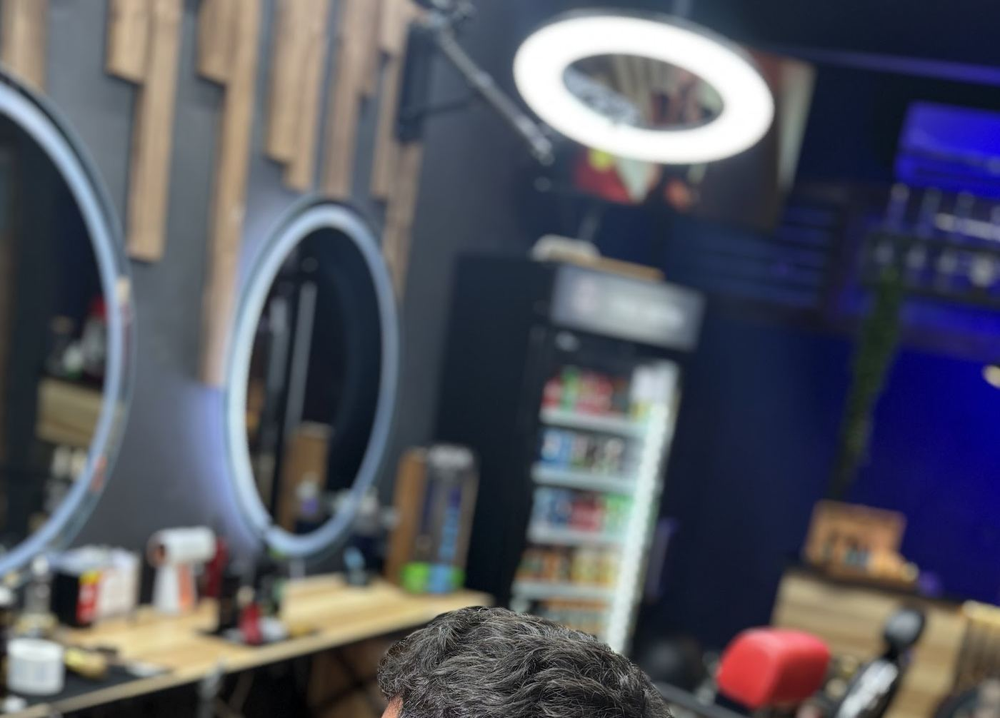
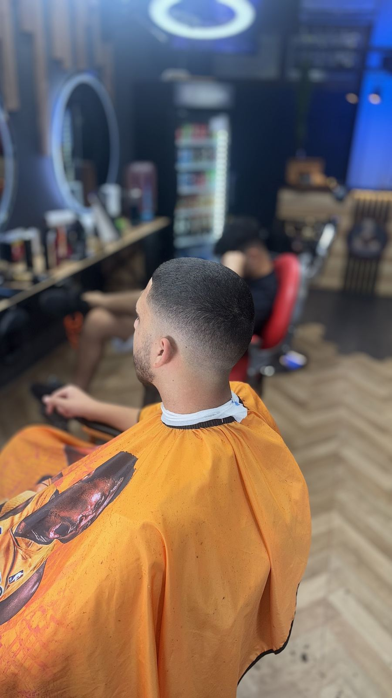
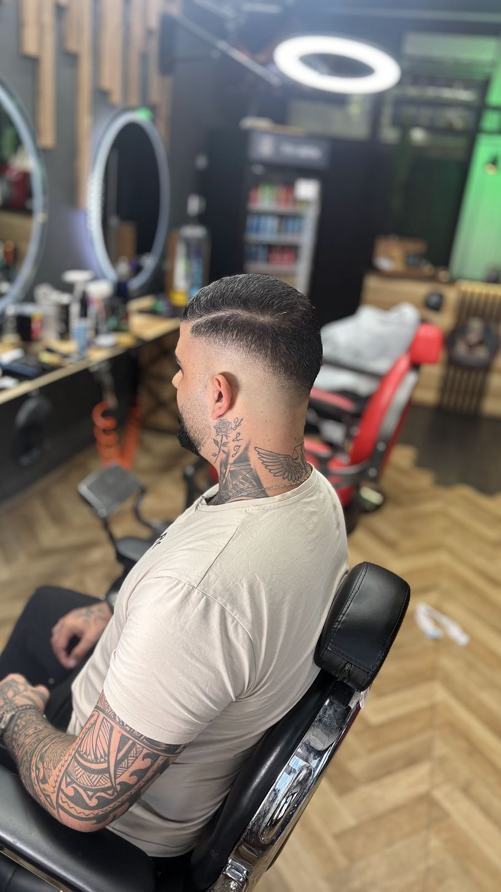
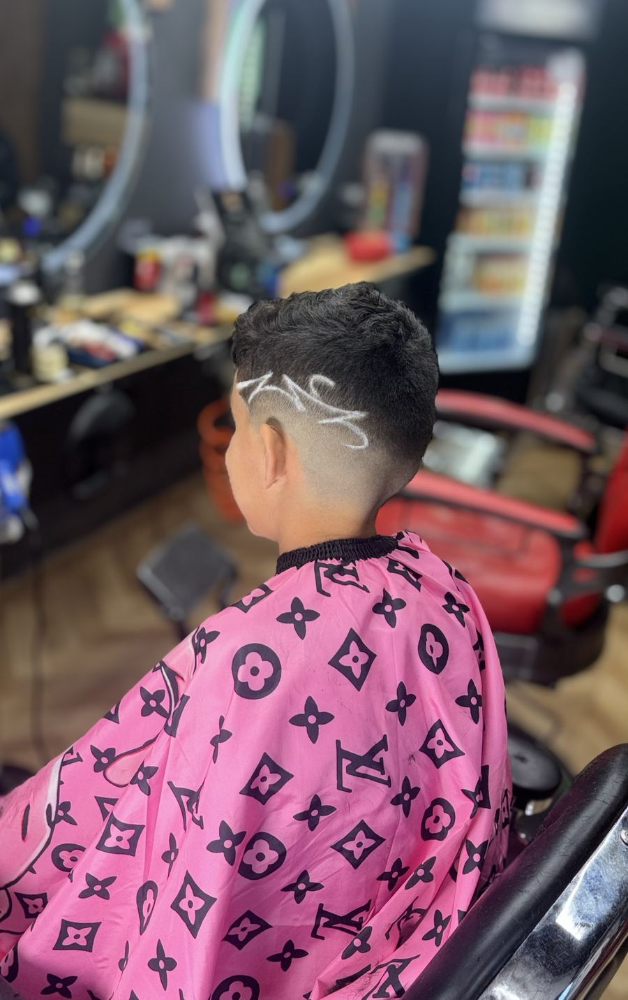
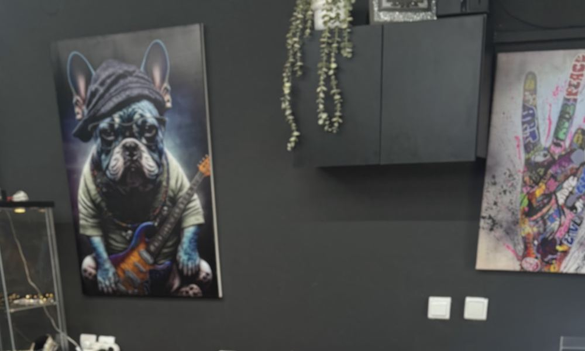

מספרת גברים וילדים · טירת כרמלMen’s & kids’ barbershop · Tirat Carmel
The_Cutstation


כל תספורת
מתחילה בקוEvery cut
starts with a line
The_Cutstation – מספרה לגברים ולילדים ברחוב שרת 32, טירת כרמל.The_Cutstation – a barbershop for men and kids at 32 Sharet St., Tirat Carmel.
5.0
347 ביקורות בגוגל347 Google reviews


דרך המראהThrough the mirror
—
מה יוצא מהכיסאWhat leaves the chair
גוררים, או פשוט ממשיכים לגלול.Drag it, or just keep scrolling.

התחנה ברחוב שרתThe station on Sharet St.
היום במספרהToday at the shop
לתפוס כיסאGet a chair
- 1בוחרים מה מסתפריםPick the cut
- 2בוחרים יוםPick a day
- 3שולחים בוואטסאפSend on WhatsApp
5.0
347 ביקורות בגוגל347 reviews on Google
מה אומרים אחריWhat they say after
״הסתפרתי אצל אלמוג
ספר מעולה! אווירה טובה
מספרה נקייה ומסודרת.
עומד בזמנים ולא נותן לך להמתין יותר מידי.
מומלץ בחום!!״“Had my cut with Almog. A great barber! Good atmosphere, a clean and tidy shop. Keeps to the schedule and doesn’t make you wait too long. Warmly recommended!!” (translated from Hebrew)
״קודם כל בכניסה למספרה כבר מרגישים את האווירה אנשים טובים קלילים רציניים
הספרים משקיעים בתספורת סבלניים … שווה תחוויה ממליץ ביותר״“The moment you walk into the shop you feel the vibe, good people, easy-going and serious. The barbers put effort into the cut, patient … Worth the experience, highly recommended.” (translated from Hebrew)
״ספר מעולה הציל אותי כמה פעמים אני מהמרכז ומסתפק רק אצלו!״
“A great barber, saved me a few times. I’m from the centre of the country and only get my hair cut by him!” (translated from Hebrew)
״מדהים, הבחור יודע לעשות קרם בורלה מקוטג.
אין הרבה פעמים שיצאתי מבסוט מספר חדש והפעם הוא נתן בראש ברמה אחרת.
תודה!״“Amazing, the guy can make crème brûlée out of cottage cheese. I haven’t often walked out of a new barber’s this happy, and this time he went all out. Thanks!” (translated from Hebrew)
ביקורות אמיתיות מגוגל.Real reviews from Google.
שאלות קצרותShort questions
איך קובעים תור?How do I book?
בקלמרק, בהודעת וואטסאפ או בטלפון 052-959-3917.On Calmark, by WhatsApp, or by phone: 052-959-3917.
מתי פתוח?When are you open?
ראשון ושלישי–חמישי 10:00–19:00, שישי 10:00–15:00. שני ושבת סגור.Sunday and Tuesday–Thursday 10:00–19:00, Friday 10:00–15:00. Closed Monday and Saturday.
מספרים גם ילדים?Do you cut kids’ hair?
כן. הרבה מהתמונות שלנו הן של ילדים בכיסא.Yes. Many of our photos are of kids in the chair.
איפה זה?Where is it?
רחוב שרת 32, טירת כרמל.32 Sharet St., Tirat Carmel.